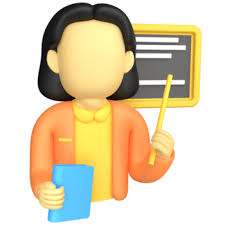

Idea del sitio web

La idea del sitio web consiste en crear un sistema básico para gestionar
solicitudes de tutorías académicas dentro de una institución educativa.
El sistema está dirigido principalmente a estudiantes que necesitan apoyo
académico y a docentes que pueden brindar acompañamiento en diferentes materias.
En muchas ocasiones, las tutorías se solicitan por mensajes, correos o de forma verbal,
lo que puede causar pérdida de información, cruces de horario o falta de seguimiento.
Por esta razón, el sitio propone una forma más ordenada de registrar y consultar citas.
Propósito del sistema
El propósito principal del sistema es facilitar la comunicación entre estudiantes
y docentes mediante una página web sencilla, donde se pueda solicitar una tutoría,
indicar el motivo, seleccionar una fecha y revisar el estado de la solicitud.
Aunque el proyecto está desarrollado solo con HTML, representa una idea inicial
de cómo podría funcionar una aplicación web académica más completa en el futuro.
Objetivos
- Permitir el ingreso y registro simulado de usuarios.
- Organizar las solicitudes de tutorías académicas.
- Mostrar información clara sobre docentes, horarios y estados de citas.
- Facilitar una navegación sencilla entre las páginas del sitio.
- Aplicar etiquetas HTML, formularios, tablas, imágenes y rutas relativas.
Beneficios de la propuesta
Este sistema ayuda a que el proceso de solicitud de tutorías sea más claro,
rápido y ordenado. Además, permite que el estudiante comprenda cómo una
aplicación web puede organizar información mediante formularios, tablas,
enlaces y páginas internas.